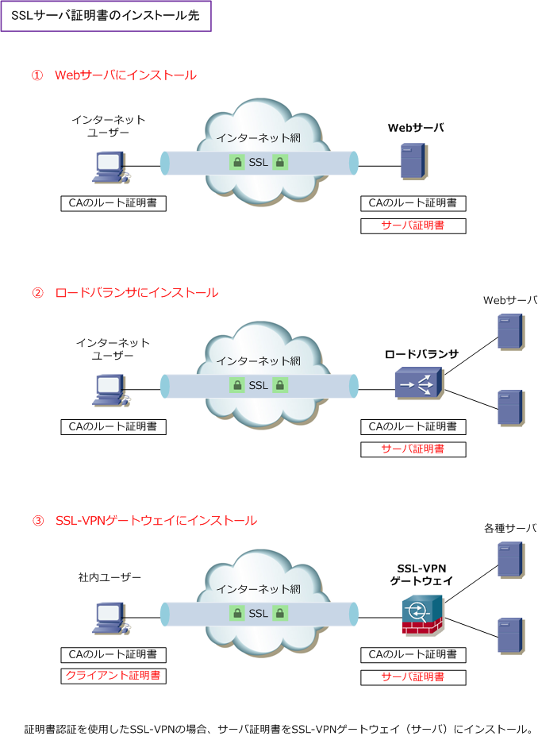
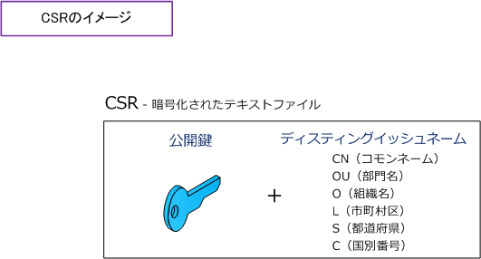
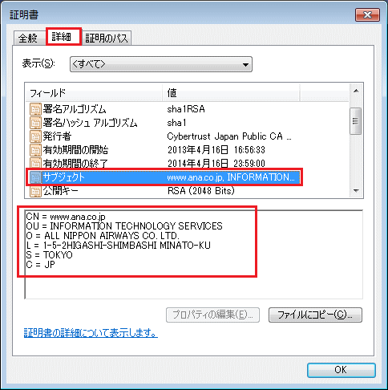
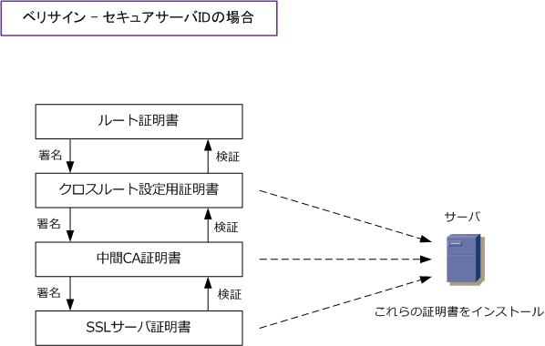

SSL Server Certificate - Part 2
◆ 以下の記事を読む前に SSLサーバ証明書をはじめからその1 を読んで頂けると理解しやすくなります。
SSLサーバ証明書の種類
SSLサーバ証明書には「企業認証型」と「ドメイン認証型」の大きく2タイプある。ベリサインを例に見ます。 最もセキュリティの可視性が高く、セキュリティ意識の高い企業の証明となるのはEV SSLサーバ証明書です。
| 証明書のタイプ | 証明書の種類 | 機能 | シマンテックブランド |
|---|---|---|---|
| 企業認証型 | EV SSLサーバ証明書 | ① SSLによる通信の暗号化 ② Webサイトの身元証明（なりすまし対策） → 厳格な発行基準による企業認証 → アドレスバーは緑色 |
Norton Secured by VeriSign |
| 企業認証型 | SSLサーバ証明書 | ① SSLによる通信の暗号化 ② Webサイトの身元証明（存在証明） → 適切な発行基準による企業認証 → アドレスバーは白色 |
Norton Secured by VeriSign |
| ドメイン認証型 | SSLサーバ証明書 | ① SSLによる通信の暗号化 → ドメイン名の管理者の申請確認で発行 → アドレスバーは白色 |
GeoTrust |
SSLサーバ証明書のインストール先
発行されたSSLサーバ証明書はWebサーバにインストールして利用すると申し上げましたが、その他にも ロードバランサにインストールして、ロードバランサがSSLサーバとしてSSL通信を終端させることも可能。 一般的に、ロードバランサにSSLサーバ証明書をインストールし、SSL通信を行わせることがほとんどです。

SSLサーバ証明書の導入
SSLサーバ証明書の導入は、通常は以下のようなフローで行います。
① SSLサーバ証明書を導入するサーバでのCSRの生成 ② オンライン申請、及び各種申請資料の送付 ③ 認証局（CA）で、CSRに署名を行いサーバ証明書として発行 ④ 認証局（CA）のルート証明書、及び発行されたサーバ証明書の受領とインストール ⑤ 検証完了後にリリース
SSLサーバ証明書を導入するサーバでのCSRの生成 - 用語の理解
先ず、以下の3つの用語を理解しておきましょう。
| 用語 | 説明 |
|---|---|
| CSR | ・ CSR（Certificate Signing Request）は、認証局（CA）に提出する署名要求のこと。 ・ CSRは、「 公開鍵とディスティングイッシュネーム 」を合わせた電子データのこと。 ・ CSRは、SSLサーバ証明書をインストールするサーバ側で生成する。 |
| コモンネーム | ・ SSLサーバ証明書をインストールするサーバのURLのFQDN部分のこと。 ・ https:// から一番最初に表示される "/ "までの部分が該当する。 ・ https://www.infraexpert.com/study/ の場合は、赤文字部分が該当する。 ・ https://192.168.0.100/index.html の場合は、赤文字部分のIPアドレスが該当。 |
| ディスティングイッシュネーム | ・ 証明書の"サブジェクト"に格納されている情報 ・ コモンネーム、Webサイトを運営する組織に関する各種情報 |
SSLサーバ証明書を導入するサーバでのCSRの生成 - CSRの概念

SSLサーバ証明書を導入するサーバでのCSRの生成 - ディスティングイッシュネームとは
CSRを生成するためには、以下の情報から構成されるディスティンイッシュネームを決める必要がある。 ここで指定した文字列がそのままサーバ証明書の情報として反映される。下記の項目と入力例については 通常のSSLサーバ証明書に適用できる内容であり、EV SSLサーバ証明書の場合は下記の入力例と異なる。
| 項目 | 意味 | 内容 | 入力例 |
|---|---|---|---|
| CN | コモンネーム | サーバにSSL通信する際に入力するブラウザのURL情報。 FQDNまたはIPアドレスを入力する。 |
www.infraexpert.com |
| OU | 部門名 | 部門、部署名など任意の識別名称 | myhobby |
| O | 組織名 | Webサイトを運営する組織の正式英語名称 | infraexpert Corp. |
| L | 市区町村 | Webサイトを運営する組織の所在地 | Minato-ku |
| S | 都道府県名 | Webサイトを運営する組織の所在地 | Tokyo |
| C | 国別番号 | 国別コード | JP |
例えばANAさんでは、EV SSLサーバ証明書ではなく通常のSSLサーバ証明書を利用されているので入力例を 見てみます。重要なポイントとして、SSL暗号化通信の際にWebブラウザは指定したURLアドレスと接続先の Webサイトの証明書のCN（コモンネーム）が一致しているどうかを検証します。この値が一致しない場合は ブラウザは警告メッセージを表示させます。

SSLサーバ証明書を導入するサーバでのCSRの生成 - IISの場合
例えば、Windows Server 2012のIISでCSRを発行する場合、フローの概要は以下の通りです。
① ディスティングイッシュネームを入力 ② 暗号化サービスプロバイダー（MS RSA SChannel Cryptographic Provider）ビット長(2048)を選択 → この際にキーペア（公開鍵 ・ 秘密鍵 ）が作成されます。 ③ CSRの保存先とファイル名の指定 ( txt形式で保存 )
認証局（CA）で発行された証明書をファイルとして保存した後、サーバに証明書をインストールして完了。 例えばベリサインの場合、IISにはSSLサーバ証明書と中間CA証明書とクロスルート設定用証明書を併せた PKCS7形式の証明書が発行されるため、別途、中間CA証明書とクロスルート設定用証明書のinstallは不要。

参考 ： PKCSとは
PKCS（Public-Key Cryptography Standards）とは、RSAセキュリティにより考案された公開鍵暗号標準 のグループのこと。PKCS #3、PKCS #7、PKCS #10、PKCS #11、PKCS #12 がよく利用されています。
| PKCS | 名称 | 説明 |
|---|---|---|
| PKCS #3 | Diffie-Hellman鍵共有標準 | 共通鍵を確立できるようにする暗号プロトコルの規定 |
| PKCS #7 | 暗号メッセージ構文標準 | PKIでメッセージを署名や暗号化するのに使用される。その規定。 PKCS #10メッセージの応答として、証明書の配布のためにも利用 |
| PKCS #10 | 証明書署名要求 | 電子証明書をCA（認証局）に要求するためのメッセージ構文の規定 |
| PKCS #11 | 暗号トークンインタフェース (Cryptoki) | PCカードなどのデバイスと暗号鍵の受け渡しをするためのAPIの規定 |
| PKCS #12 | 個人情報交換構文の標準 | パスワードに基づく鍵(暗号)により保護された秘密鍵とそれに関連する 公開鍵証明書を保管するために利用されるファイルフォーマットの定義。 PFXはPKCS#12の旧称であるゆえ、エクスポートファイルを .pfx から .p12 へ拡張子を変更して利用する場合がある。 |